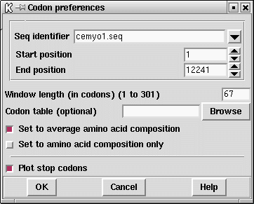

This gene finding method is based on Staden, R. and McLachlan, A.D. (1982) Codon preference and its use in identifying protein coding regions in long DNA sequences. Nucl. Acid Res. 10, 141-156.
The current method contains a number of improvements on the original one. We are trying to decide if each segment of the sequence is coding or non-coding. Each possibility is represented by a model consisting of a table of expected codon usage. The calculation finds the odds that each segment of the sequence fits either the coding or non-coding model, and the results are plotted as log odds.
The results for each reading frame are plotted in the graphics window with frame 1 in the top panel, frame 2 the middle and frame 3 in the bottom panel. Frame 1 is the frame of the first base in the active region. At each position along the sequence the program also plots a single dot for the reading frame with the highest score. These dots appear at the midpoints of the three panels and will form a continuous line if one reading frame is consistently the highest scoring.
The figure shown below shows a SPIN Sequence Plot containing the results of the codon usage method on a sequence from C. elegans. This sequence has strong codon usage bias and so produces clear results for the method. Here the results are for the standard codon usage employing only the codon usage table shown below and a window length of 67 codons (i.e. no table of codon usage for non-coding sequence was supplied, and no normalisation was performed on the coding table). Compare the results to the other screen dump shown later, which also uses a window of 67 codons.
Also visible in the figure are the cross hairs. Their x position is shown in sequence base numbers in the left hand box above the plot, and the y coordinate, expressed using the score values of the gene search, is shown in the right hand box. Each line in the window has its own colour and can be dragged and dropped to new locations to reorganise the plot. The cursor in the plot can be used to control the position of the cursor in the sequence display.
As can be seen in the dialogue below
the user can define the size of the scan window in codons (note that the
window length must be odd), the name of
the file containing the codon usage table, and the region of the
sequence to be analysed. The longer the window the smoother the plots
but the more difficult it is to finds the ends of the coding
segments. The stronger the codon preference in the codon table the
higher the discrimination between coding and non-coding (assuming the
sequence being analysed has the same preferences as those of the
table). Note also that the amino acid composition represented in the
table will also influence the results.

The user should supply the name of a file containing two concatenated
codon usage tables - the first being from coding sequence and the
second from noncoding sequence.
This double codon table can be calculated by
spin using
the Codon Usage function
(see section Calculate codon usage).
If the user gives
the name of a file that contains only a single codon table the
algorithm will assume that it is from coding sequence, and will
generate a noncoding table that consists of the frequencies
that would be expected if the sequence being analysed was random
but had the same base composition as the codon table.
If no table is specified the program will generate a codon usage table
corresponding to an average amino acid composition, and then derive
a non-coding table from its base composition. This is equivalent to the
"positional base preferences" method, and hence replaces it. More information
about this method is given further down
(
see section Positional base preferences)
In addition the user can select to set the amino acid composition of the
coding table to have an average amino acid composition, and/or to have
no codon preference (i.e. for each amino acid the codon counts are equal,
i.e. (TTT = TTC); (TTA = TTG = CTT = CTC = CTA = CTG); ...;
(GGT = GGC = GGA = GGG)). In the latter case the search uses amino acid
composition only.
The average amino
composition used to normalise the values in the codon table
is that described by McCaldon and Argos McCaldon and Argos (1988),
Proteins 4, 99-122.
The dialogue also allows the user to control whether or not the positions
of stop codons are included in the display.
Codon tables are scaled so that the sum of their values is 1000 and then
any zero entries are set to 1/1000. Stop codons in the coding table are
made to be neutral by setting them to the mean value for the table.
Example of the tables employed/calculated for
an input coding table, no non-coding table, and normalise to average
amino acid composition.
![[picture]](spin_codon_usage,6in.png.html)
(Click for full size image)
Table read in:
===============================================
F ttt 3 S tct 29 Y tat 5 C tgt 9
F ttc 35 S tcc 21 Y tac 15 C tgc 5
L tta 2 S tca 6 * taa 0 * tga 0
L ttg 23 S tcg 9 * tag 0 W tgg 15
===============================================
L ctt 70 P cct 1 H cat 17 R cgt 37
L ctc 39 P ccc 2 H cac 15 R cgc 18
L cta 0 P cca 14 Q caa 87 R cga 1
L ctg 4 P ccg 0 Q cag 17 R cgg 1
===============================================
I att 32 T act 30 N aat 11 S agt 1
I atc 53 T acc 20 N aac 56 S agc 5
I ata 1 T aca 3 K aaa 21 R aga 36
M atg 31 T acg 0 K aag 115 R agg 0
===============================================
V gtt 28 A gct 69 D gat 57 G ggt 5
V gtc 22 A gcc 52 D gac 32 G ggc 1
V gta 7 A gca 6 E gaa 76 G gga 48
V gtg 4 A gcg 0 E gag 99 G ggg 1
===============================================
Program generates non-coding table from the base
composition of the coding table:
===============================================
F ttt 13 S tct 13 Y tat 12 C tgt 18
F ttc 13 S tcc 12 Y tac 12 C tgc 17
L tta 12 S tca 12 * taa 11 * tga 16
L ttg 18 S tcg 17 * tag 16 W tgg 24
===============================================
L ctt 13 P cct 12 H cat 12 R cgt 17
L ctc 12 P ccc 12 H cac 11 R cgc 17
L cta 12 P cca 11 Q caa 11 R cga 16
L ctg 17 P ccg 17 Q cag 16 R cgg 23
===============================================
I att 12 T act 12 N aat 11 S agt 16
I atc 12 T acc 11 N aac 11 S agc 16
I ata 11 T aca 11 K aaa 11 R aga 15
M atg 16 T acg 16 K aag 15 R agg 22
===============================================
V gtt 18 A gct 17 D gat 16 G ggt 24
V gtc 17 A gcc 17 D gac 16 G ggc 23
V gta 16 A gca 16 E gaa 15 G gga 22
V gtg 24 A gcg 23 E gag 22 G ggg 31
===============================================
Program generates coding table with average amino acid
composition and stops set to mean:
===============================================
F ttt 3 S tct 28 Y tat 8 C tgt 11
F ttc 36 S tcc 20 Y tac 24 C tgc 6
L tta 1 S tca 6 * taa 16 * tga 16
L ttg 15 S tcg 9 * tag 16 W tgg 13
===============================================
L ctt 46 P cct 3 H cat 12 R cgt 23
L ctc 25 P ccc 6 H cac 10 R cgc 11
L cta 0 P cca 42 Q caa 33 R cga 1
L ctg 3 P ccg 0 Q cag 7 R cgg 1
===============================================
I att 19 T act 33 N aat 7 S agt 1
I atc 32 T acc 22 N aac 37 S agc 5
I ata 1 T aca 3 K aaa 9 R aga 22
M atg 24 T acg 0 K aag 48 R agg 0
===============================================
V gtt 30 A gct 45 D gat 34 G ggt 7
V gtc 24 A gcc 34 D gac 19 G ggc 1
V gta 8 A gca 4 E gaa 27 G gga 63
V gtg 4 A gcg 0 E gag 35 G ggg 1
===============================================
Last generated on 25 April 2016.